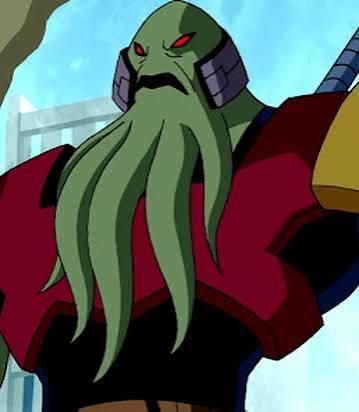

Objetivo
O relógio foi criado por Azmuth, um ser da inteligentíssima espécie Galvariana, que depois de se arrepender da criação da lendária espada Ascalon, que tinha um poder imensurável, queria se redimir criando um dispositiovo que gerasse a paz do universo, o Omnitrix, pois com ele, seria possível sentir literalmente na pele a vida de outro ser, e consequentemente, gerar a empatia.
Choque de realidade

Consquistadores como Vilgax, sabendo do tamanho poder que o Omnitrix poderia trazer, tenta roubá-lo atacando a nave onde estava Azmuth. Isso fez azmuth ver que sua criação estava sendo caçada para ser usada extamente ao contrário de seu objetivo inicial: como uma arma. Assim, ele se arrepende novamente com sua própria criação.
Seu portador original
Vendo a situação, Azmuth não tem escolha a não ser enviar o relógio ao planeta mais próximo. Ao ver que era a terra, ele calcula a tragetória para ir até o mais respeitado dos Encanadores, Max Tennyson, o avó de Ben. Entratanto, por um erro de cálculo, o Omnitrix acabou caindo para perto de Ben, por possuírem um DNA muito semelhante.
Mesmo assim, Ben se mostrou um digno usuário do Omnitrix, fazendo que ele se tornasse o portador oficial do Omnitrix para Azmuth.